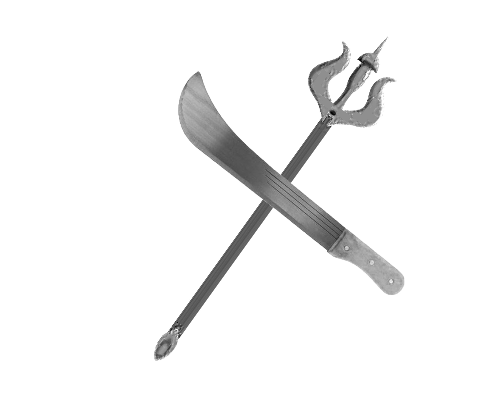

In the days when Gorakhnath had perfected his yogic powers and established his ashram in the sacred mountains, the world faced a great threat. A powerful demon named Mahishasura, born from the darkest corners of the universe, began terrorizing the lands. His strength was immeasurable, and he fed on fear and suffering, growing more powerful with each evil deed.
The demon challenged the gods themselves, claiming dominion over all three realms. He could not be killed by any mortal weapon, for he had earned a boon that protected him from conventional means. The celestial beings, unable to defeat him directly, sought the aid of the greatest yogi of the age—Gorakhnath.

The Challenge
Gorakhnath accepted the challenge, not out of pride, but out of compassion for the suffering beings caught in Mahishasura's destructive path. He descended from his mountain retreat and confronted the demon on a vast plain where the very earth trembled beneath their feet.
"I am Gorakhnath," the yogi declared, his voice resonating with divine authority. "I have come to end your reign of darkness and restore peace to these lands."
The demon laughed, a sound like thunder that shook the mountains. "You are merely a mortal mystic," Mahishasura roared. "Your flesh and bones will be no match for my power. I have defeated armies, toppled kingdoms, and defied the gods themselves. You will fall like all others before me."
The Battle of Divine Powers
What followed was no ordinary battle. Gorakhnath wielded not swords or spears, but the fundamental forces of the universe itself. He commanded the earth to rise, the wind to strike, and the fire to burn. The demon transformed into countless forms—a raging tiger, a massive serpent, a towering giant—each form revealing new powers and terrifying strength.
But Gorakhnath's spiritual mastery was absolute. With each transformation, the yogi adapted, neutralizing the demon's attacks with yogic mantras and divine energy. His body became an instrument of cosmic force, channeling the power of the universe through his perfected form.
Victory Through Enlightenment
In the climactic moment of the battle, Gorakhnath realized that brute force alone could not vanquish Mahishasura. Instead, he used his supreme wisdom and compassion. He opened the demon's eyes to the futility of his path, showing him glimpses of enlightenment and the illusory nature of power gained through darkness and suffering.
Faced with the truth of existence revealed by the great yogi, Mahishasura's resistance crumbled. The demon's form dissolved into particles of light that dissipated into the cosmos. The lands were freed from his tyranny, and peace was restored.
From that day forward, Gorakhnath's fame spread across the three realms. Gods and mortals alike recognized him as the greatest master of yogic power and spiritual wisdom. His victory over the demon became a symbol of how righteousness and enlightenment ultimately triumph over darkness and ignorance.